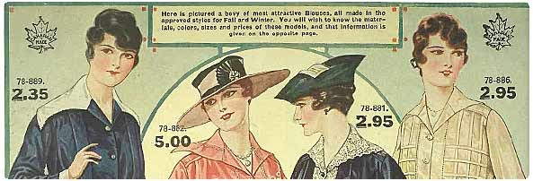

Historia de Comercio Electrónico
12 de Febrero de 2017 por Ricardo Pérez Sánchez
¿Te has preguntado alguna vez como surgió el Comercio Electrónico y las Tiendas Virtuales? ¿Cuando aparecieron en nuestras vidas? No podemos saber cuál es la fecha de creación del comercio dentro de la historia de la humanidad. Pero sabemos que esta actividad nació de una necesidad de los hombres para ser autosuficientes. El intercambio de bienes y servicios es un primer indicio de la evolución, sin este intercambio no se podría asegurar la subsistencia ni el desarrollo de los seres humanos.
Las redes sociales, las comunicaciones móviles, la web 2.0., los teléfonos inteligentes, las tablets que hoy en día tenemos a nuestro alcance están cambiando los hábitos de consumo de nuestro mundo. Ya no basta con poner un catálogo de productos en una tienda online de manera estática y esperar que los usuarios compren. Cada vez son más las personas que utilizan su tableta o Smartphone para realizar búsquedas, comparar precios y también para comprar online. Esta tendencia se impondrá en un futuro no muy lejano y las empresas que quieran vender online deberán adaptarse a estos nuevos hábitos y dispositivos. Si queréis saber más sobre el futuro del e-commerce os recomendamos que os leais este artículo también: Usar el móvil para comprar por Internet.
La historia del comercio ha ido evolucionando, a veces de una forma pausada y lenta y en algunas ocasiones con pasos agigantados. Lo que entendemos ahora como comercio electrónico es la última fase a la cual hemos llegado de este progresivo desarrollo. Desde luego, no hemos alcanzado ni mucho menos la cumbre más alta de esta evolución, en el futuro llegarán muchas más novedades que harán más efectivo, eficiente y rápido el intercambio de bienes y servicios entre humanos.
Comercio Electrónico
Podemos confirmar que el año que nació como tal el comercio electrónico fue hacia el 1920 en los Estados Unidos dónde apareció la venta por catálogo. Este nuevo sistema de distribución fue una gran revolución en ese momento, ya que fue la primera vez que se podía comprar sin antes ver el producto. La venta por catálogo funcionaba mediante fotos ilustrativas del producto. La gran ventaja que posibilitaba este sistema comercial era que se podía vender en zonas rurales difíciles de acceder.
Primeros Catálogos en Estados Unidos

Ejemplo de Catálogo a Color
Este año se invento en Estados Unidos una importante forma de Intercambio de Datos Electrónicos el EDI. La historia del eCommerce comienza en este año cuando Electrónic Data Interchange crea el EDI y permite a las empresas realizar transacciones electrónicas e intercambio de información comercial.
En este momento aún no habían aparecido las computadoras como tal. No fue hasta la década de los años 1970 que aparecieron las primeras relaciones comerciales que utilizaban un ordenador, pero aún ofrecían un servicio muy limitado. No fue hasta el 1980 que se modernizó el comercio por catálogo con la ayuda de la televisión con las “televentas”. La televisión proporcionó al comercio por catálogo un mayor realismo de los productos ya que podían ser exhibidos resaltando sus atributos y características más importantes. Este tipo de venta directa se hacía mediante la utilización las llamadas telefónicas y el pago se realizaba a través de las tarjetas de crédito.
Las tablets y los Smartphones son los últimos dispositivos para comprar online.